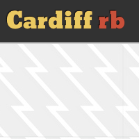

Cardiffrb
A list of Ruby users in Cardiff. Uses omniauth to sign in with Twitter.
I’m Gareth and I build web applications. I currently work at Cardiff University Students’ Union. I’m interested in developing interfaces that scale from mobile to desktop. I’m a fan of Ruby on Rails, HTML5, CSS3 and designing in the browser.
A list of Ruby users in Cardiff. Uses omniauth to sign in with Twitter.
A stylesheet and html package that targets only html tags to get an app looking presentable without worrying about classes and id’s.
An information portal for students that balances quick retrieval with regularly updated content.
A website focused on increasing event turn-out with a custom-made CMS to make the process as easy as possible.
A hand-made advert management system to replace the overly-complicated open source solution currently in place.